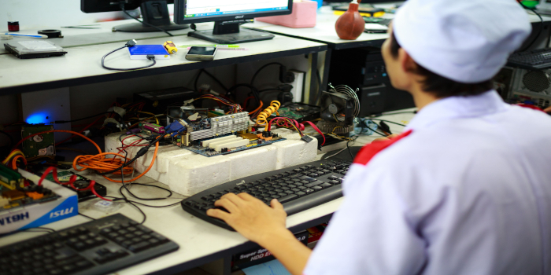

Hardware e Software
Aprenda os conceitos fundamentais da informática, conhecendo os principais componentes físicos do computador e os programas que permitem seu funcionamento.
O que é Informática?
A informática é a área responsável pelo estudo da tecnologia da informação, envolvendo computadores, programas, redes e dispositivos eletrônicos. Atualmente ela está presente em praticamente todas as atividades do cotidiano, como estudos, trabalho, comunicação e entretenimento.
O funcionamento de um computador depende da união entre duas partes fundamentais: o hardware e o software. Enquanto o hardware representa os equipamentos físicos, o software corresponde aos programas que executam tarefas e permitem a interação do usuário com a máquina.
Hardware e Software trabalham juntos
Um computador só funciona corretamente quando hardware e software trabalham em conjunto.

O hardware fornece os componentes físicos necessários para o funcionamento da máquina, enquanto o software envia instruções para que esses componentes executem diferentes tarefas.
Por exemplo:
- O teclado (hardware) envia informações.
- O Windows (software) interpreta essas informações.
- O processador (hardware) realiza os cálculos.
- O navegador (software) abre uma página da internet.
Curiosidade
Mesmo o computador mais moderno do mundo não consegue realizar nenhuma tarefa sem um software instalado.
se tiver mais curiosidade assista o vídeo